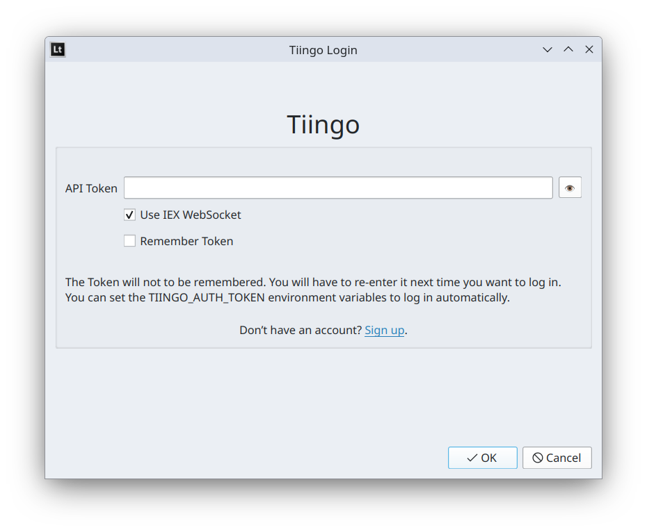

Connect to Tiingo for Market Data¶
Note
Stocks data feeds available only in Latinum (standard edition) and Latinum Stocks for Mac.
A Tiingo account is required. Please visit Tiingo and sign up for one. Tiingo accounts are free and don’t require identity documents.
Visit the API Token section of your account dashboard. Save the API Token somewhere where you can copy it into Latinum.
Please read the Tiingo documentation for updated instructions if those provided here are incorrect.
Open Latinum. The Broker Selection window will be displayed. This window is sometimes called the Connection Selection window. Select Tiingo and click OK.
The Tiingo Login window will be displayed. Paste in the API Token you located earlier. Click on OK.
The Tiingo data feed will now be available in Latinum. To connect using different options, navigate to File -> Logout and restart Latinum.